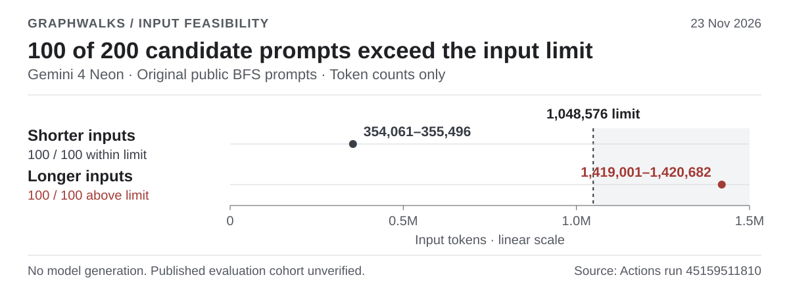

GraphWalks: Gemini 4 Neon
Google reports 95.2% on long-context GraphWalks BFS. We verified the public candidate source and counted all 200 original prompts with Gemini. Half exceed the model's input limit. The published score remains unreproduced.
All 200 candidate inputs have source-bound provider token counts. Google's actual benchmark selection and evaluation settings remain unconfirmed.
Read the research dossier ↗Gemini 4 Neon, reported by Google
GPT-6.2 Sol; 8 graded of 16 selected
Deterministic BFS; zero model inference calls
Public candidate BFS reference records
Eight graded tasks. Eight blocked by the input limit.
The recorded mean F1 is 0.875 over the eight graded tasks. All seven disclosed final lines independently recompute to F1 = 1.0 against the reference index. The remaining graded response failed parsing; its recorded F1 is zero and the final line is withheld.
No full-cohort mean is reported for all 16 selected tasks. Context-blocked tasks are ungraded. Full-answer extraction, provider authentication, independent third-party review and actual billed cost remain unverified. No publisher claim reproduced.
8 graded / 16 selected · 8 context-blocked
One withheld parser failure
2,042,715 input · 63,870 output tokens
| Task | Recorded F1 | Score evidence |
|---|---|---|
bfs-row-000132 | 1.000 | Recomputed |
bfs-row-000155 | 1.000 | Recomputed |
bfs-row-000166 | 1.000 | Recomputed |
bfs-row-000190 | 1.000 | Recomputed |
bfs-row-000115 | 0.000 | Parser failure; withheld |
bfs-row-000145 | 1.000 | Recomputed |
bfs-row-000178 | 1.000 | Recomputed |
bfs-row-000124 | 1.000 | Recomputed |
One original task. All 9 reference nodes recovered.
GPT-6.2 Sol answered bfs-row-000100 at xhigh reasoning effort. The actual API usage was 255,598 input tokens and 572 output tokens. The released final answer line scores F1 = 1.0 against the pinned reference. Both the workflow and a separate offline calculation agree.
The estimated conservative usage cost is $1.28943, not an invoice. The disclosed answer line is available for rescoring; full-answer extraction fidelity, independent provider authentication and external third-party review remain unverified. This single task does not estimate model-wide accuracy or reproduce Google's 95.2%.
Precision 1.000 · recall 1.000 · 9 / 9 reference nodes
Input tokens · 572 output tokens
$2.58871 reserved · $5 authorized ceiling
100 prompts fit. 100 exceed the limit.
We sent every original public candidate prompt to Gemini 4 Neon's token-count endpoint. Google reports a maximum of 1,048,576 input tokens for this model. Every longer-band prompt exceeds that ceiling, even if no tokens are reserved for output.
This tests the pinned public candidate dataset, not Google's unpublished benchmark cohort. Token counting is not model inference and does not confirm or refute the reported 95.2% F1.
354,061–355,496 provider-reported input tokens
1,419,001–1,420,682 input tokens, minimum excess 370,425
Provider-reported maximum input tokens. 65,536 is the separate output cap. The 8,192-token future output reservation was never generated.
Input-token ranges
Download figure (SVG)

The first OpenAI preflight passed.
GPT-6.2 Sol counted 255,598 input tokens on the same original task for which Gemini 4 Neon reported 355,124. Both fit their respective input limits. The source prompt is bfs-row-000100.
These are model-specific API input-token counts for one prompt, not a performance comparison. The $2.26103 figure is a conservative hypothetical OpenAI generation reservation with 65,536 output tokens, not a billed charge. This historical preflight was non-generative; see the separately executed OpenAI diagnostic above.
922,000 input-token limit
1,048,576 input-token limit
One task · hypothetical 65,536 output tokens
Inspect the 200 tasks
Choose any task to inspect its original prompt digest, deterministic BFS score and provider-reported input tokens. The matrix encodes character-length bands, not token counts.
Loading the verified reference index…
Deterministic BFS control
We parsed the original public prompts, reconstructed directed graphs, and executed ordinary breadth-first search. All 200 tasks scored F1 = 1.0 under the source's grading convention, including the 100 longer-context cases. No AI model was called.
This is an algorithmic reference control. It checks the public dataset and graph-operation implementation. It does not reproduce or invalidate the publisher's Gemini 4 Neon result, because a specialized parser and an LLM are different systems.
Source provenance
Original Parquet bytes were downloaded and hashed independently in GitHub Actions. Original prompts and reference answers are omitted from the task explorer; the separately authorized model final-line evidence is linked above. Its data is derived deterministically from the verified source index.
be6cc6ecf9b4d495b07d1ff53d2a16598e90fed7537879431c72a42e3b500f80efc3047e7facb90390b6063d33679b4320985911250d80874ad9bc8edf278cf3bf7aa145da3f2b34967c5504b8fa8703358480ee